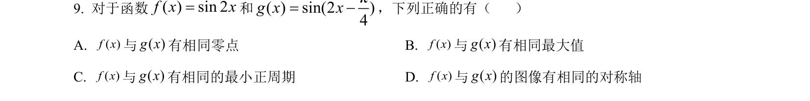
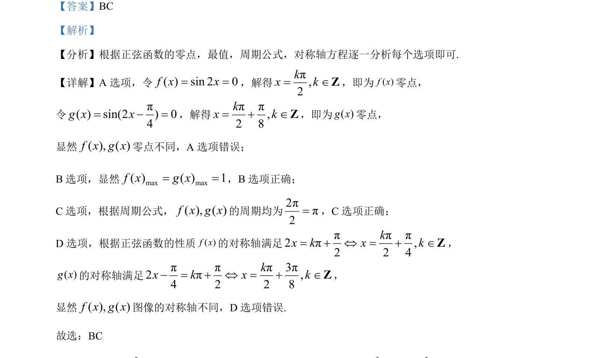

考点：零点 最值 周期 对称轴

本题通过比较两个正弦型函数的零点、最值、周期和对称轴，考查正弦函数的图像与性质。

📄 原 PDF 第 8 页：
素材/真题/吉林/2008-2024·（吉林）数学高考真题/2024年高考数学试卷（新课标Ⅱ卷）（解析卷）.pdf
【答案】BC 【解析】 【分析】根据正弦函数的零点，最值，周期公式，对称轴方程逐一分析每个选项即可. 【详解】A 选项，令( ) sin 2 0f x x= =，解得π,2kx k= ÎZ，即为( )f x零点， 令 π( ) sin(2 ) 04g x x= - =，解得ππ,2 8kx k= + ÎZ，即为( )g x零点， 显然( ), ( )f x g x零点不同，A 选项错误； B选项，显然max max( ) ( ) 1f x g x= =，B选项正确； C选项，根据周期公式，( ), ( )f x g x的周期均为2ππ2=，C选项正确； D 选项，根据正弦函数的性质( )f x的对称轴满足 πππ2π,2 2 4kx k x k= + Û = + ÎZ， ( )g x的对称轴满足πππ3π2π,4 2 2 8kx k x k- = + Û = + ÎZ， 显然( ), ( )f x g x图像的对称轴不同，D 选项错误. 故选：BC